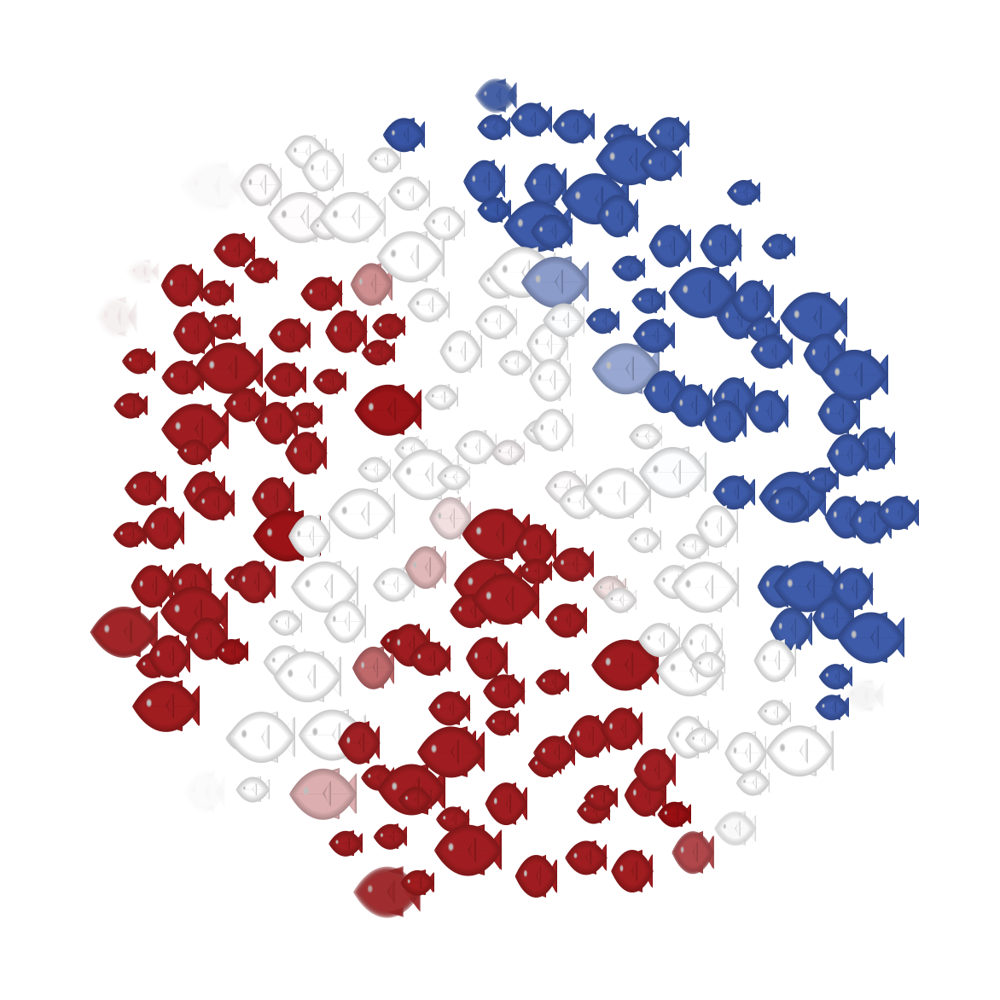

Jeremiah was a Frog
I’m rebooting my blog, previously
hosted on Blogspot. I finished
a conversion to Frog some time ago —
Jeremiah is a
static blog generator that evolved out of a heavily modified version of
Frog. During this evolution, the code lost several of the virtues of the
original, such as tests, documentation, and features. It’s not
finished. It’s not compatible with Frog. It’s not stable —
Scribble metadata is written in comments before the #lang line. The title can also be extracted from the page content. For example, the metadata from this post is declared as follows:
;; Date: 2020-03-17 ;; Tags: racket #lang scribble/manual @title{Jeremiah was a Frog} .... If Frog’s attitude is “here, let me get that for you”, Jeremiah’s attitude is “that looks like something you can handle yourself”. Here are a few examples of this philosophy:
Jeremiah provides hooks for producing HTML, but you must give it functions, not template files. You’re welcome to implement those functions using include-template, of course, but Jeremiah doesn’t want to know. (Actually, Jeremiah comes with a default template that uses include-template and provides sub-hooks to make HTML generation easier.)
A site configuration file is just an ordinary Racket module that gets dynamic-required for side-effect at the beginning of processing. You must require jeremiah/config and set the necessary parameters. Jeremiah currently doesn’t even set the current-directory to the configuration file’s directory, because you can use define-runtime-path to get absolute paths from module-relative paths.
The command-line interface doesn’t have a --verbose flag; instead, Jeremiah logs to the jeremiah topic; the info level corresponds to verbose output, and debug is very verbose.
Jeremiah uses a different directory layout. Static sources are copied to the output directory on each build, so cleaning up can be done with rm -rf. The layout is not currently configurable.
Jeremiah currently writes each post to its own directory. This makes it slightly easier to handle Scribble posts that generate auxiliary files like images.
Jeremiah uses Racket classes and objects pervasively in its implementation and in the interface it exposes for HTML generation. For example, the main page generator, instead of getting an environment with lots of variables, gets the following: Page object (which might be a Post or an IndexPage) and a Site object (and the latter is a parameter, not an argument). From these objects you can extract titles, dates, various links, HTML content, etc.
Jeremiah currently has none of Frog’s widgets and body enhancers. I’ll probably adapt them case-by-case as I need them.
Jeremiah generates only Atom feeds (no RSS), and it uses the tag URI scheme for generating feed and post identifiers.
Despite the changes, Jeremiah owes a lot to Frog. It’s easier to make
changes —
Joy to the fishes!